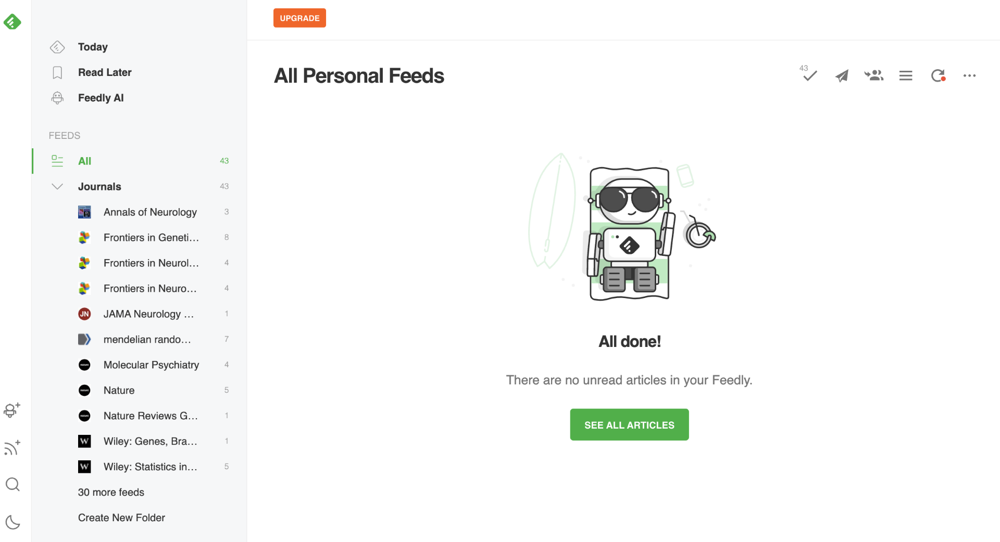

Journal Club
Journal clubs serve as a critical cornerstone in the ongoing education and professional development of researchers, clinicians, and students alike. They provide a structured yet collaborative environment for dissecting and discussing current research papers in depth. Not only do these sessions enhance critical thinking and appraisal skills, but they also keep participants abreast of the latest advancements and methodologies in their field. Furthermore, journal clubs foster a culture of collective learning and interdisciplinary dialogue, enabling the exchange of diverse perspectives and insights. This enriches the understanding of complex topics and often sparks innovative ideas for future research endeavors.
How to find papers
Shea has established an RSS feed to stay updated on newly published papers. Utilizing Feedly, he follows approximately 40 journals, receiving daily updates. Each morning, Shea skims through paper titles to identify articles of interest. He then reviews selected abstracts and fully reads a few of the more compelling papers. Additionally, he uses X (formerly Twitter) to discover papers that are being discussed or shared by other researchers in the field.

Shea follows all the journals in which he has published, as they are presumably relevant to his research. He also keeps tabs on other high-impact journals in the field, as well as the Pre-print servers BioRxiv (Genetics) and MedRxiv (Genetic And Genomic Medicine).
Some suggested journals are:
- Nature
- Science
- Alzheimer’s & Dementia
- JAMA Neurology
- Lancet Neurology
- Nature Genetics
- The American Journal of Human Genetics
Structure
This is a suggested structure for Journal Club presentations. Presenters should aim for a presentation length of about 30 minutes, followed by a discussion period.
The Introduction: Start the presentation by introducting the paper, authors, and affiliations. Share what specifically attracted you to this paper. Was it the topic, the methodology, or something else? Briefly mention why this paper is important to the lab’s work or the field in general.
The Problem: This section should clearly state the problem or the project that the research is addressing. It should be concise and to the point, providing enough context for the reader to understand the importance of the research. This section often includes a brief overview of the current state of knowledge or research in the field.
The Methods: Summarize the main methods and research techniques that are relevant to the results being presented. Briefly mention where the data comes from, if relevant.
The Results: This section should detail the main findings or observations of the research. It should explain what was discovered or observed and how it was done. This section often includes specific details about the methods used in the research.
Critical analysis: Discuss what the paper does well. This could be anything from innovative methods to significant findings. Point out areas where the paper falls short. This could be limitations in the study design, data collection, or interpretation of results. Evaluate the validity of the results and the soundness of the methodology. Are the conclusions supported by the data?
The Implications: This section should discuss the implications of the research findings. It should explain how the findings contribute to the field and what they mean for future research. This section often includes speculation or predictions about future developments in the field based on the research findings.